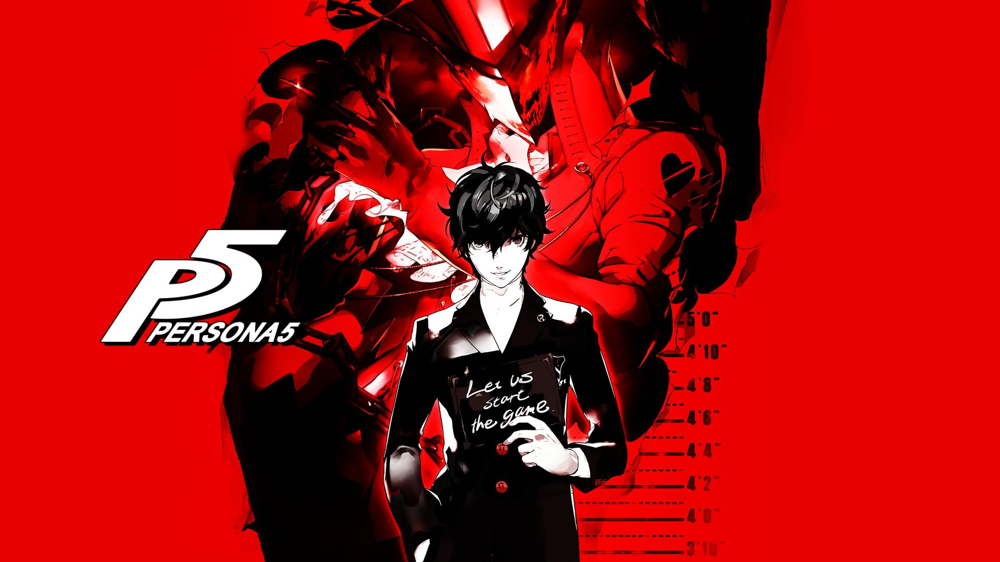
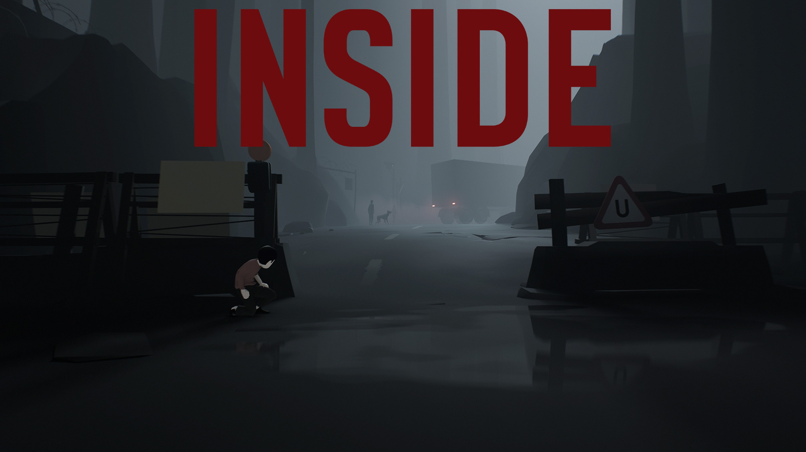
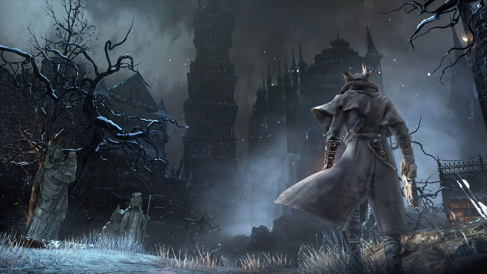
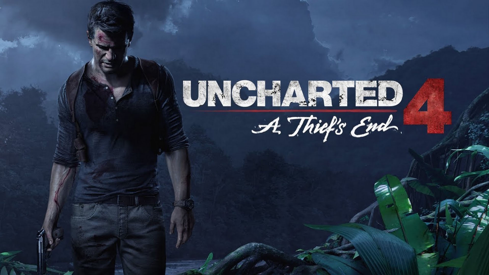

Persona 5 na PlayStation 4 to piąta odsłona jednej z najpopularniejszych i najbardziej oryginalnych serii jRPG. Marka narodziła się w 1996 roku jako spin-off cyklu Shin Megami Tensei. Tytuły spod szyldu Persona dość szybko zyskały kultowy status wśród fanów japońskich RPG. Prawdziwą popularność na Zachodzie uzyskały one jednak dopiero wraz z premierą Persony 4 na PlayStation 2 w 2009 roku. Dzięki zainteresowaniu graczy doczekała się ona także rozszerzonego portu na konsoli PlayStation Vita oraz aż czterech produkcji pobocznych. Persona 5 została zapowiedziana w 2013 roku. Tytuł jest pierwszym przedstawicielem tej serii, który ukazał się na konsoli PlayStation 3 i PlayStation 4. Autorzy wykorzystali w nim technologię oraz doświadczenie zdobyte przy produkcji gry Catherine z 2011 roku. Na czele zespołu deweloperskiego firmy Atlus stanęli sprawdzeni twórcy poprzednich części, w tym główny projektant Katsura Hashino, kompozytor Shoji Meguro oraz odpowiedzialny za wygląd postaci artysta Shigenori Soejima.

The Last of Us to interaktywny survival horror stanowiący połączenie dynamicznej gry akcji z delikatnymi elementami przygodowymi. Tytuł ten wyszedł spod ręki studia Naughty Dog, czyli ojców takich serii jak Uncharted, Jak & Daxter i Crash Bandicoot. Akcja toczy się w niedalekiej przyszłości, 20 lat po tym jak tajemnicza zaraza zdziesiątkowała naszą cywilizację. Opuszczone miasta objęły we władanie rośliny i zmutowane ofiary, a ocalali ludzie walczą ze sobą o jedzenie i broń. Fabuła obraca się wokół dwójki bohaterów – mającego ponad 40 lat przemytnika broni i narkotyków imieniem Joel oraz nastoletniej sieroty Ellie - i koncentruje się na ich próbach przeżycia w tej przerażającej rzeczywistości.

Inside jest drugim projektem niezależnego duńskiego studia PlayDead, które zyskało sławę kultową produkcją Limbo. Gra powstała dzięki wsparciu Duńskiego Instytutu Filmowego, który docenił walory artystyczne produkcji. Fabuła opowiada historię małego chłopca, który musi powstrzymać siły zła, próbujące przejąć kontrolę nad światem za pomocą eksperymentów przeprowadzanych na ludziach. Zasady rozgrywki przypominają klasyczne platformówki, łącząc konieczność rozwiązywania rozmaitych zagadek logicznych z zadaniami wymagającymi refleksu i sporych zdolności manualnych. Akcja gry toczy się w ponurym, spowitym półmrokiem i nieustannym deszczem uniwersum, którego stylistyka przypomina wcześniejszą, bestsellerową produkcję studia. Tym razem mamy jednak do czynienia z trójwymiarowym światem, wzbogaconym skromną kolorystyką i klimatyczną ścieżką dźwiękową. Całość powstała zaś na popularnym, multiplatformowym silniku Unity.

Klasyczne RPG akcji japońskiego studia From Software. Tytuł jest autorską produkcją Hidetakiego Miyazakiego, twórcy legendarnego Demon's Souls oraz serii Dark Souls. Według twórców, Bloodborne należy traktować jako duchowego następcę serii Dark Souls oraz poprzednich i mniej znanych gier studia From Software, takich jak King's Field, które ukazały się na konsolach PlayStation i PlayStation 2. Tytuł powstaje w ścisłej współpracy z firmą Sony Computer Entertainment. W przeciwieństwie do poprzednich dzieł japońskiego dewelopera, rozgrywających się w quasi-średniowiecznych realiach, Bloodborne przenosi graczy do mrocznego świata fantasy, zrealizowanego w XIX-wiecznej wiktoriańskiej stylistyce.

Uncharted 4: Kres Złodzieja (Uncharted 4: A Thief's End) na konsolę PlayStation 4 jest czwartą odsłoną serii Uncharted. Jednocześnie jest to pierwsza część (nie licząc składanki Uncharted: Kolekcja Nathana Drake'a) przeznaczona na konsolę PlayStation 4. Za stworzenie gry odpowiada ponownie studio Naughty Dog, znane z takich hitów jak The Last of Us, Crash Bandicoot czy też Jak and Daxter: The Precursor’s Legacy. Tak jak jak w poprzednich odsłonach przebojowej serii, w Uncharted 4: Kres Złodzieja na PlayStation 4 wcielamy się w awanturnika i poszukiwacza skarbów Nathana Drake’a, mającego tendencję do pakowania się w kłopoty w różnych egzotycznych częściach globu. Akcja produkcji rozgrywa się trzy lata po wydarzeniach ukazanych w Uncharted 3: Oszustwo Drake’a.